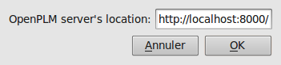
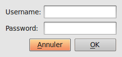
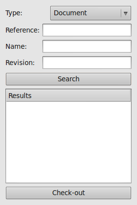
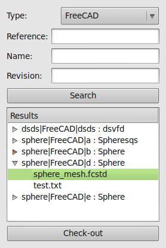
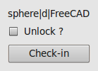
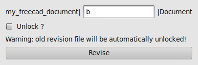
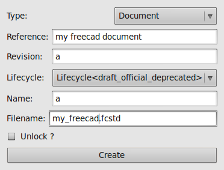

Table Of Contents
Previous topic
Next topic
2.2. Plugin for OpenOffice.org/LibreOffice

2.2. Plugin for OpenOffice.org/LibreOffice
This plugin is available on the svn in the directory trunk/plugins/freecad/.
Of course, you need FreeCAD, this plugin has been test with the versions 0.10 and 0.11. You also need to have a valid Python environment (version 2.6) with the library Poster (available here).
Just go in the plugins/freecad directory and run the command ./install.sh.
Launch FreeCAD, if the plugin has been successfully installed, a new workbench named OpenPLM is available.
Warning
This will only install the plugin for the current user.
First, you should specify where the server is located:
Activate the OpenPLM workbench.
open the configuration dialog (menu OpenPLM ‣ Configure). This dialog should appear:
Enter your server’s location
Click on Ok.
Before checking-out a file, you sould login:
Activate the OpenPLM workbench.
Open the configuration dialog (menu OpenPLM ‣ Login). This dialog should appear:
Enter your username and your password
Click on Ok.
To check-out a file, activate the OpenPLM workbench. Then, click on OpenPLM ‣ Check-out. This dialog should appear:

Enter your query and click on the Search button, then expand the item called Results. You can browse the documents to see which files are available by expanding the items:

Then select your file and click on the Check-out button. This should open your file, now you can work as usual.
Once you have finished your work, you can revise the document or check-in it.
If you just want to visualize a file without modifying it, click on OpenPLM ‣ Download from OpenPLM. Enter your query, select your file and click on the Download button.
To save your work on the server, click on OpenPLM ‣ Check-in. This dialog should appear:

Check the Unlock? button if you want to unlock your file, this will also close your file in FreeCAD.
Click on the Check-in button.
To create a new revision of the document link to your file, click on OpenPLM ‣ Revise. This dialog should appear:

Check the Unlock? button if you want to unlock your file, this will also close your file in FreeCAD.
Note
The old revision file is automatically unlock.
Click on the Revise button.
You can create a new document from a file which was not checked-out nor downloaded. Click on OpenPLM ‣ Create a document. This dialog should appear:

Fill the form (do not forget the filename with its extension) and click on Create to validate the creation.
Like for a revision or a check-in, check the Unlock? button if you want to unlock your file, this will also close your file in FreeCAD.
All checked-out/downloaded files are opened when you launch FreeCAD, you can forget a file by clickin on OpenPLM ‣ Forget current file.
You can link the current document to a part by clicking on OpenPLM ‣ Attach to part. This will display a dialog to choose the part. Select one and click on the Attach button.